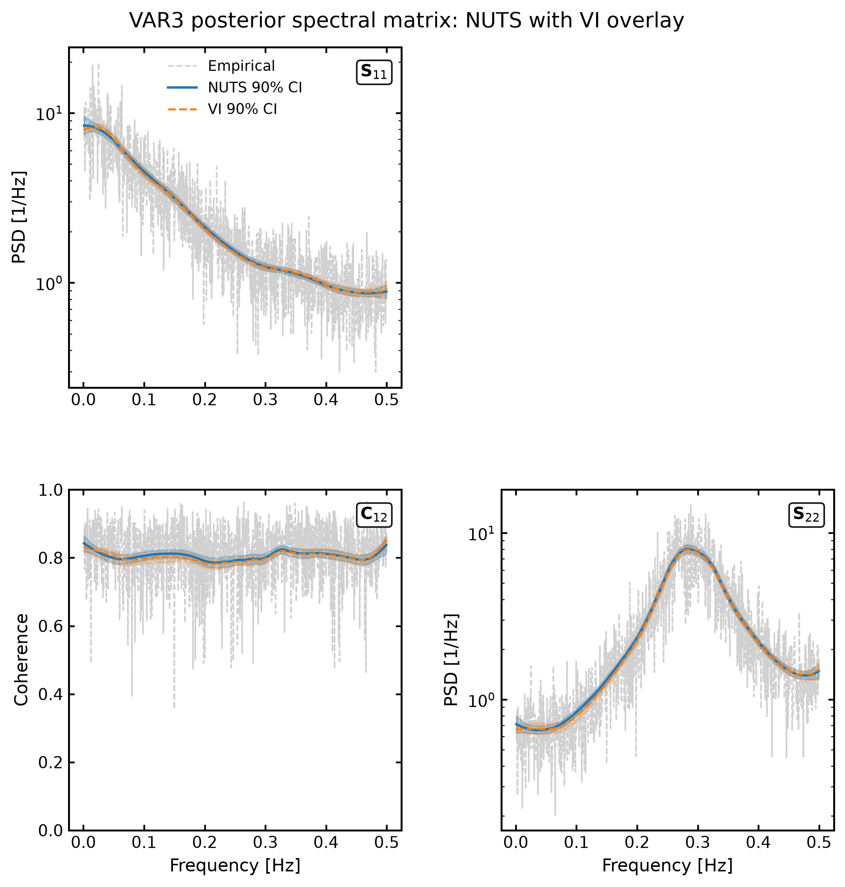

Multivariate PSD estimation#
For a \(p\)-channel stationary time series, the spectral density is no longer a single scalar PSD. Instead, at each frequency \(f\) we infer a complex Hermitian spectral density matrix
The diagonal elements
are the auto-spectral densities of the individual channels, while the off-diagonal elements
describe the cross-spectral density between channels \(j\) and \(l\).
The aim is therefore to infer a smooth, positive-definite matrix-valued function
Multivariate Whittle likelihood#
Let
denote the complex Fourier coefficients from block \(b\) at frequency \(f_k\).
For a stationary Gaussian process, the multivariate Whittle approximation treats the Fourier coefficients as approximately independent complex Gaussian variables,
where \(T\) is the duration of each time-domain block.
For \(N_b\) independent blocks, define the Wishart sufficient statistic
where \(H\) denotes the conjugate transpose.
Then, up to constants independent of \(\mathbf{S}\),
This is the multivariate analogue of the scalar Whittle likelihood.
Cholesky parameterisation#
Directly modelling every element of \(\mathbf{S}(f)\) is inconvenient because the matrix must remain positive definite at every frequency.
Instead, we parameterise the inverse spectral density matrix as
where
is diagonal and positive, and
is a complex unit lower-triangular matrix.
The spectral density matrix is reconstructed as
which guarantees that \(\mathbf{S}(f)\) is positive definite.
P-spline model#
Each frequency-dependent component of the Cholesky decomposition is represented using a P-spline.
For the diagonal terms,
so that \(\delta_j(f)^2 > 0\).
For the complex off-diagonal terms,
with
and
Each diagonal, real off-diagonal, and imaginary off-diagonal field therefore has its own spline coefficients and smoothness prior.
Factorisation by Cholesky row#
An important consequence of the inverse-Cholesky parameterisation is that the likelihood can be written as a product of contributions from the individual rows of \(\mathbf{T}\).
Write a factorisation of the Wishart statistic as
Let \(\mathbf{u}_j(f_k)\) denote row \(j\) of \(\mathbf{U}(f_k)\). Define the residual
Then the contribution from row \(j\) is
and the full likelihood is
For three channels, the three factors depend on
and
respectively.
This factorisation allows the Cholesky rows to be sampled separately when independent priors are placed on their parameter blocks.
Coarse-graining#
For long time series, evaluating the likelihood at every Fourier frequency can be expensive. Nearby frequencies can therefore be grouped into coarse bins.
Let the retained Fourier frequencies be divided into consecutive disjoint sets
where bin \(J_h\) contains \(N_h\) fine-frequency bins.
Let \(\bar f_h\) denote the representative frequency of bin \(h\).
Within each coarse bin, the Wishart sufficient statistics are summed:
If the spectral density varies slowly within the bin,
then the sum can be approximated as a single Wishart statistic with
effective degrees of freedom.
The coarse-grained likelihood is therefore
The factor \(N_h\) appears explicitly in the log-determinant term because each coarse bin represents \(N_h\) Fourier frequencies.
It does not appear as an additional factor in the trace term because
already contains the summed contribution from those frequencies.
Validity of coarse-graining#
The coarse-grained likelihood assumes that the spectral density is approximately constant within each bin,
This is generally a good approximation in smooth regions of the spectrum, but can break down if a bin spans a sharp feature such as a narrow spectral line or a rapid change in the cross-spectrum.
The coarse-bin width therefore introduces a trade-off:
smaller bins retain more frequency resolution and more closely approximate the original likelihood,
larger bins reduce the number of likelihood evaluations but make a stronger assumption that the spectrum is approximately constant within each bin.
The current implementation uses consecutive, equal-sized frequency bins over the retained frequency band.
Example#
In the following cells, we demonstrate the fit on some multivar VAR(2) data.

! pip install -q --upgrade "LogPSplinePSD" "multimethod>=1.12,<2"
import os
os.environ.setdefault("XLA_FLAGS", "--xla_force_host_platform_device_count=1")
import jax
import matplotlib.pyplot as plt
import numpy as np
jax.config.update("jax_enable_x64", True)
from log_psplines import PipelineConfig, fit
from log_psplines.plotting import PSDMatrixPlotSpec, plot_psd_matrix
from log_psplines.example_datasets import VARMAData
# Simulate multivar data
varma = VARMAData(n_samples=2**14)
plt.plot(varma.data)
# Run inference on the simulated data
config = PipelineConfig(
n_knots=10,
degree=2,
diffMatrixOrder=2,
n_warmup=500,
n_samples=750,
num_chains=2,
method="nuts",
vi_guide="diag",
Nb=8,
target_accept_prob=0.9,
max_tree_depth=8,
true_psd=varma.get_true_psd(),
rng_key=7,
verbose=True,
)
result = fit(varma.ts, config)
# plot results
fig, axes = plot_psd_matrix(
PSDMatrixPlotSpec(
idata=result.idata,
overlay_vi=True,
label="NUTS 90% CI",
vi_label="VI 90% CI",
channel_labels=["x0", "x1"],
show_knots=False,
save=False,
close=False,
)
)
fig.suptitle("VAR3 posterior spectral matrix: NUTS with VI overlay", y=1.02)
plt.show()